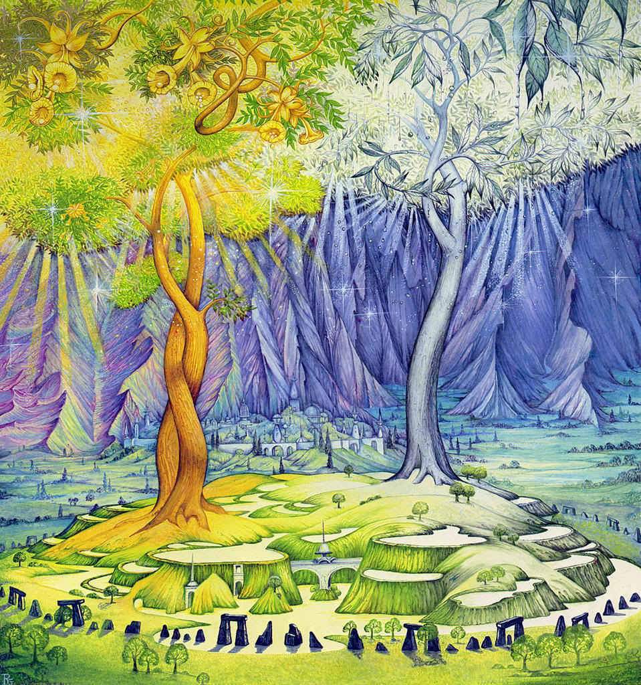

Roky stromů
Krátce po přestěhování do Amanu vytvořila Yavanna Dva stromy, stříbrný Telperion a zlatý Laurelin. Tyto posvátné stromy osvětlovaly Valinor, ,avšak Středozem zůstala kvůli hradbám Pelóri osvětlena pouze hvězdami.Poražený Melkor strávil tři věky uvězněn v Amanu. Poté, co byl milosrdným Manwëm propuštěn, začal mezi elfy šířit lži a pomluvy. Ty byly nakonec odhaleny, ale Melkor uprchl. Spojil se s pavoučicí U ngoliant a společně zahubili Dva stromy. Melkor navíc zabil Finwëho, velekrále Noldor, ukradl Fëanorovy silmarily a uprchnul s nimi do Středozemě, kde se opevnil ve své pevnosti Angbandu a prohlásil se za krále světa.
